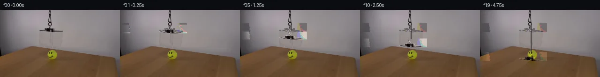

![首帧]()

Round 00
2026-11-05T21:55:11.719287+00:00像素候选变化代码 +213/−0inspection 更新
pixels fae30acae0280856 · code c5d00120c48fd8c1
查看本轮 generate.py 真实 diff
--- previous/generate.py
+++ current/generate.py
@@ -0,0 +1,213 @@
+"""PixelWorld-Text: Clear acrylic box lowers over tennis ball with smiley face.
+
+Method: Layer-based compositing with box tint extraction.
+1. Build smooth background via horizontal interpolation (wall + table).
+2. Extract per-pixel box tint map (tint = with_box / background).
+3. Extract box rim and cord as separate features.
+4. For each frame: un-tint then re-tint at shifted position + move rim/cord.
+Frame 0 is kept as exact copy of first_frame.png.
+"""
+import numpy as np
+from PIL import Image, ImageDraw
+from pathlib import Path
+
+# ── Constants (measured from first_frame.png via RGB inspection) ───────
+H, W, F = 144, 256, 20
+
+# Box geometry in frame 0
+BOX_TOP, BOX_BOT = 28, 46 # box body vertical extent
+BOX_LEFT, BOX_RIGHT = 0, 142 # box body horizontal extent
+RIM_TOP, RIM_BOT = 39, 46 # box bottom rim (dark edge)
+RIM_LEFT, RIM_RIGHT = 80, 130 # rim horizontal extent (slightly wider than visible)
+CORD_TOP, CORD_BOT = 0, 28 # orange cord vertical extent
+CORD_LEFT, CORD_RIGHT = 104, 111 # cord horizontal extent
+
+TOTAL_DESCENT = 62 # pixels the box lowers over 19 frames (4.75 sec)
+
+# ── Load first frame ───────────────────────────────────────────────────
+img0 = np.array(Image.open('first_frame.png')).astype(np.float32)
+assert img0.shape == (H, W, 3)
+
+# ── 1. Build smooth background (no box, no ball, no cord, no rim) ─────
+bg = np.zeros_like(img0)
+
+for y in range(H):
+ if y < 78:
+ # Wall: interpolate between left and right clean edges
+ left_ref = img0[y, 0:4].mean(axis=0)
+ right_ref = img0[y, 200:250].mean(axis=0)
+ else:
+ # Table: interpolate between left and right clean edges
+ left_ref = img0[y, 0:20].mean(axis=0)
+ right_ref = img0[y, 180:250].mean(axis=0)
+ for x in range(W):
+ t_frac = x / (W - 1)
+ bg[y, x] = left_ref * (1 - t_frac) + right_ref * t_frac
+
+# ── 2. Extract per-pixel box tint map ─────────────────────────────────
+box_tint = np.ones((H, W, 3), dtype=np.float32)
+for y in range(BOX_TOP, BOX_BOT + 1):
+ for x in range(BOX_LEFT, BOX_RIGHT + 1):
+ bg_px = bg[y, x]
+ img_px = img0[y, x]
+ for c in range(3):
+ if bg_px[c] > 5:
+ ratio = img_px[c] / bg_px[c]
+ box_tint[y, x, c] = np.clip(ratio, 0.5, 1.5)
+
+# ── 3. Extract rim and cord features ───────────────────────────────────
+rim_mask = np.zeros((H, W), dtype=bool)
+rim_px = np.zeros((H, W, 3), dtype=np.float32)
+for y in range(RIM_TOP, RIM_BOT + 1):
+ for x in range(RIM_LEFT, RIM_RIGHT + 1):
+ diff = img0[y, x] - bg[y, x]
+ if diff.sum() < -30:
+ rim_mask[y, x] = True
+ rim_px[y, x] = img0[y, x]
+
+cord_mask = np.zeros((H, W), dtype=bool)
+cord_px = np.zeros((H, W, 3), dtype=np.float32)
+for y in range(CORD_TOP, CORD_BOT + 1):
+ for x in range(CORD_LEFT, CORD_RIGHT + 1):
+ diff = img0[y, x] - bg[y, x]
+ if diff.sum() < -20:
+ cord_mask[y, x] = True
+ cord_px[y, x] = img0[y, x]
+
+# ── 4. Simple inpainting for rim/cord regions ──────────────────────────
+def inpaint(img_in, mask_in):
+ """Replace masked pixels with nearest non-masked neighbor color."""
+ result = img_in.copy()
+ hh, ww = img_in.shape[:2]
+ for yy in range(hh):
+ for xx in range(ww):
+ if mask_in[yy, xx]:
+ best = None
+ for radius in range(1, max(ww, hh)):
+ found = False
… diff truncated; 126 more lines …